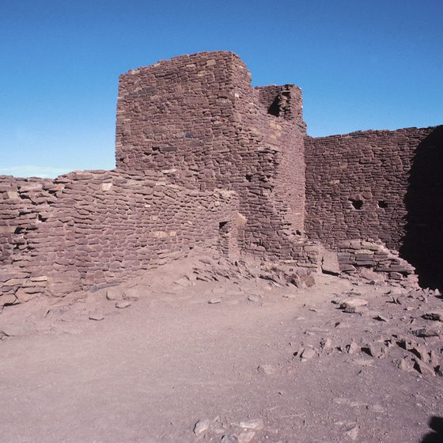
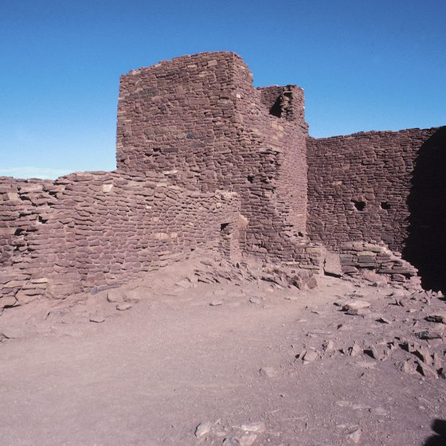

The History Flagstaff


As the first International Dark Sky City, Flagstaff is home to the Lowell Observatory, known for the discovery Pluto. Some of the best star-gazing in the country takes place in Flagstaff and the observatory is just the place to do it. Just outside of Flagstaff are the Lava Tube Caves, Meteor Crater and Walnut Canyon.
 
